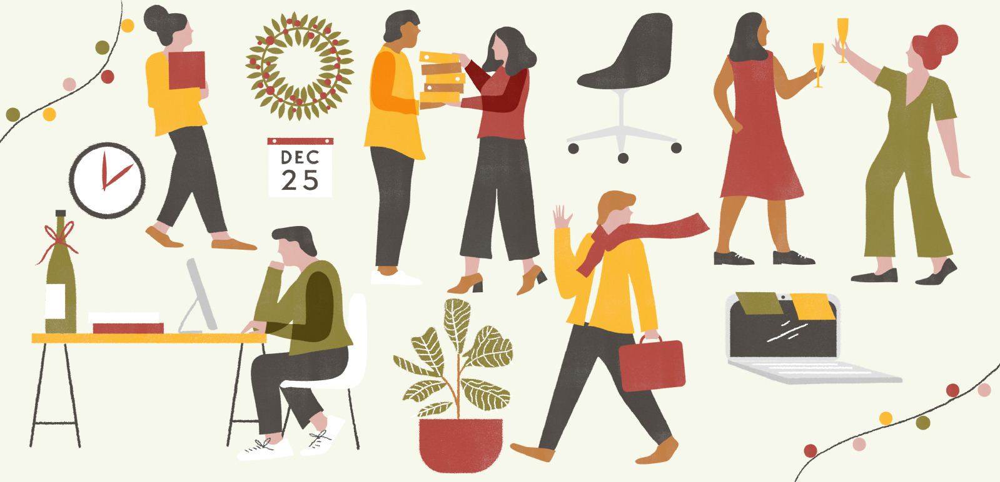

Vizyon Ve Misyonumuz
Vizyonumuz
jasomder, süreçlerimizde ve kalite yöntemlerimizde mükemmelliğe ulaşarak
müşterilerimizin zevki olmalıdır.
Vizyonumuz, küresel çapta genişleme ile Türkiye'de lider yönetim danışmanlığı ve
teknoloji hizmetleri şirketi olmaktır.
Herkes için refah, anlam ve bağlantı dolu bir iş dünyası yaratmaktır.
Misyonumuz
En güncel Bilgi Teknolojisi olanaklarını kullandırarak müşterilerimizin
rekabet gücünü arttırmak, uzun vadeli ve güvene dayalı ilişkilerle de en üst düzeyde
Müşteri Memnuniyeti yaratmaktır.
Ekibimiz, sonuç veren zorlayıcı pazarlama mesajlarıyla ruha ilham vermek, kalbe nüfuz
etmek ve zihni ateşlemek için çalışarak dünyadaki herhangi bir işin hayatını emecek
ilgisizliği ortadan kaldırmak için çalışır.
Değerlerimiz
Müşterilerimizin iş ihtiyaçlarını karşılamak ve beklentilerini yükseltmek için gelişen
teknolojileri kullanarak yenilikçi dijital çözümler sunmak.
Dünya standartlarında ürünler oluşturmamıza yardımcı olmak için şirketimizde bir güven,
işbirliği, açıklık ve hesap verebilirlik kültürü oluşturmak.
To become truly unique by implementing people-first philosophy to drive every business
interaction.
Yenilikçi ve son teknoloji çözümlerimizle insan hayatı ve işletmeler üzerinde olumlu bir
etki yaratmak.

İşimiz
Şirketler, giderek daha bağlantılı hale gelen bir dünyada rekabet edebilmek için bu
dijital dönüşümü benimsemelidir. Teknolojik gelişmeler hızlanmaya devam ediyor ve
şirketler yok olmaktan kaçınmak için dijitalleşmeli ve uyum sağlamalı.
Dijital artık herkesin günlük yaşamının bir parçası ve varlığı yıldan yıla büyümeye devam
edecek. Günümüzde akıllı telefon hayatımızın vazgeçilmez bir aracı haline geldi:
mesajlarımızı, fotoğraflarımızı, anılarımızı, iş e-postalarımızı ve bizim için
vazgeçilmez hale gelen birçok uygulamayı saklıyoruz. Ceplerimize sığan bu küçük cihaz,
mesafeyi ortadan kaldırmayı ve internet aracılığıyla dünyanın her yerinden insanlarla
bağlantı kurmayı mümkün kılıyor.
Şirketler artık bu gerçeği inkar edemezler ve bazıları iş modellerini dijitale
dayandırarak bunu açıkça anladılar. Örneğin coğrafi konum ve gerçek zamana dayanan
milyar dolarlık bir "Taksi" şirketi
Uber'in durumu böyledir.